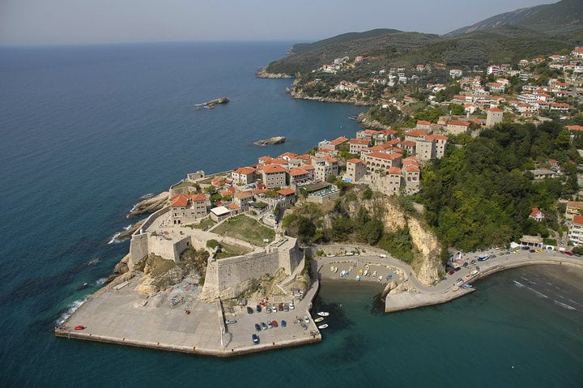

Profile information
Email:
Password: *******
Welcome to the Old Town of Ulcinj
Discover the Ancient History, Breathtaking Views, and Unique Culture of Ulcinj's Old Town!
About the Old Town of Ulcinj
The Old Town of Ulcinj, perched on a hill overlooking the Adriatic Sea, is one of the oldest settlements on the Adriatic coast, with over 2,000 years of history. This fortified town has been shaped by various civilizations, from the Illyrians and Romans to the Byzantines and Ottomans, each leaving its mark on Ulcinj's rich cultural tapestry. Known for its ancient architecture, narrow stone streets, and stunning sea views, the Old Town is a must-visit destination for those seeking both adventure and history.
Top Attractions
- Ulcinj Castle (Ulcinj Fortress)
- Best time to visit Year-round
- Activities: Sightseeing, photography, exploring galleries
- Location Ulcinj Old Town
- Museum of Ulcinj
- Best time to visit Open year-round
- Activities Historical exploration
- Location Ulcinj Old Town
- The Slave Market Square
- Location Center of Ulcinj Old Town
This iconic medieval fortress stands proudly at the highest point of the Old Town, offering panoramic views of the Adriatic Sea and the surrounding area. Once a key defensive stronghold, today it houses art galleries, museums, and restaurants.
Located within the ancient walls of the Old Town, the Museum of Ulcinj tells the story of the town’s rich history through artifacts from its Illyrian, Roman, and Ottoman pasts. The museum also features exhibits on the town’s connection to piracy and slavery, which once played a significant role in its economy.
A reminder of Ulcinj’s more turbulent past, this square was once used as a slave market during the time of Ottoman rule. Now, it's a historic landmark where visitors can reflect on the town’s complex history while taking in the medieval architecture.
Outdoor Adventures
The Old Town of Ulcinj is surrounded by natural beauty, perfect for adventurers looking to combine history with outdoor activities. The cliffs surrounding the town offer incredible views and opportunities for exploring coastal paths, while the nearby beaches, such as Mala Plaža (Small Beach) and Velika Plaža (Long Beach), are ideal for water sports.
- Popular Hiking Trails Explore the ancient pathways that surround the town and lead to scenic viewpoints above the Adriatic.
- Water Activities Head down to the nearby beaches for swimming, snorkeling, or windsurfing.